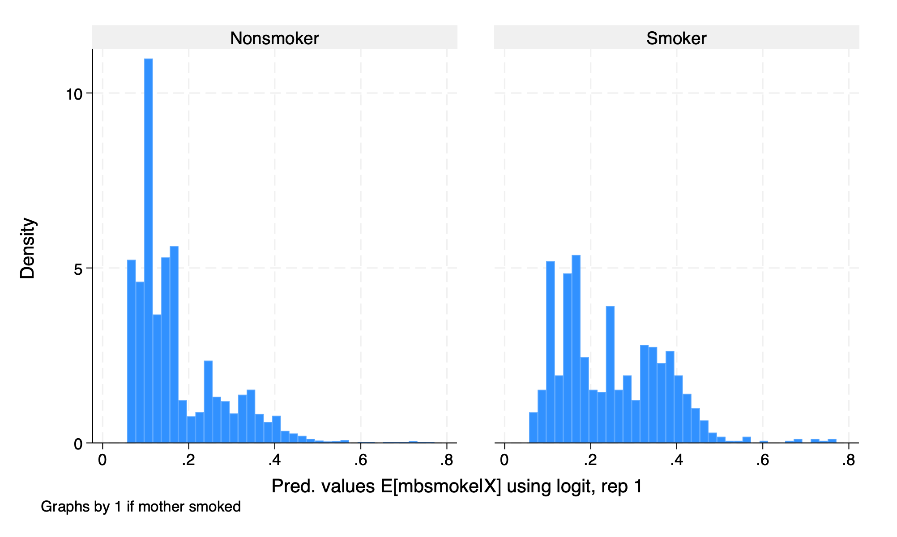
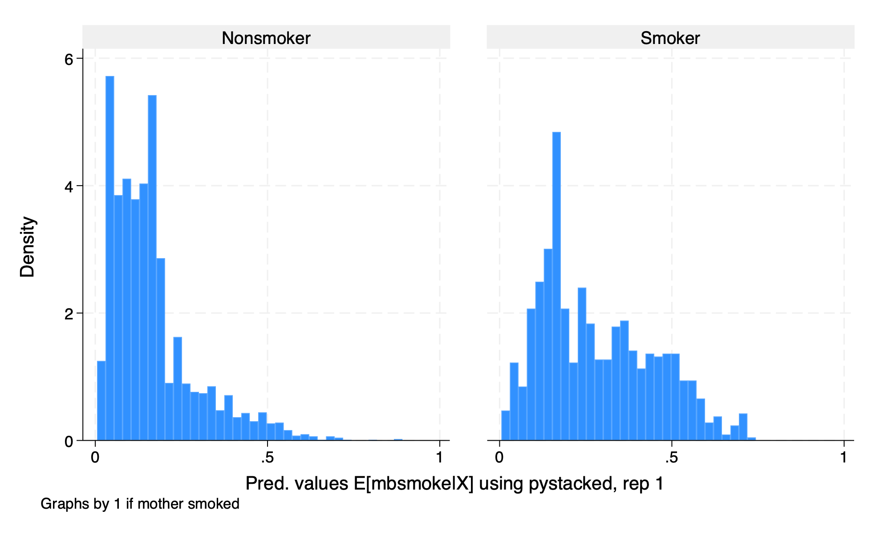

Chapter 3 Interactive Model
For the interactive model , \(D\) is binary in interactive model. This will be more familiar to what we have seen in other methods.
\[ Y=g_{0}(D,X)+\varepsilon \]
\[ \delta^{ATE}=E[g_0(1,X)-g_0(0,X)] \] \[ \delta^{ATET}=E[g_0(1,X)-g_0(0,X)|D=1] \]
3.1 Assumptions
Our assumptions should be familiar:
- Conditional Mean Independence: \(E[U|D,X]=0\)
- Overlap or Common Support Assumption: \(Pr(D=1|X) \in (0,1)\)
This is similar to our matching estimators discussed previously.
3.2 Explore the data
We will use data from Cattaneo (2010) on smoking and birth weight. Our outcome of interest will be birth weight of a babay in grams, and our treatment of interest will be a binary if the mother smoked.
macro drop _all
webuse cattaneo2, clear
global Y bweight
global D mbsmoke
global X mage prenatal1 mmarried fbaby mage medu
set seed 42
sum $Y, detail
tab $D
sum $X(Excerpt from Cattaneo (2010) Journal of Econometrics 155: 138–154)
Infant birthweight (grams)
-------------------------------------------------------------
Percentiles Smallest
1% 1474 340
5% 2438 340
10% 2693 397 Obs 4,642
25% 3033 454 Sum of wgt. 4,642
50% 3390 Mean 3361.68
Largest Std. dev. 578.8196
75% 3726 5188
90% 4026 5216 Variance 335032.2
95% 4224 5387 Skewness -.784952
99% 4621 5500 Kurtosis 5.788678
1 if mother |
smoked | Freq. Percent Cum.
------------+-----------------------------------
Nonsmoker | 3,778 81.39 81.39
Smoker | 864 18.61 100.00
------------+-----------------------------------
Total | 4,642 100.00
Variable | Obs Mean Std. dev. Min Max
-------------+---------------------------------------------------------
mage | 4,642 26.50452 5.619026 13 45
prenatal1 | 4,642 .8013787 .3990052 0 1
mmarried | 4,642 .6996984 .4584385 0 1
fbaby | 4,642 .4379578 .4961893 0 1
mage | 4,642 26.50452 5.619026 13 45
-------------+---------------------------------------------------------
medu | 4,642 12.68957 2.520661 0 17We see that the median and mean birth weight is \(3.4 kg\) with a minimum of \(0.3 kg\) and a maximum of \(5.5 kg\).
For our treatment variable, \(864\) women smoked while \(3,778\) women did not smoke.
3.3 Initiate the model
We will train the model with the command ddml init interactive. We will use k-fold of 5 and 5 repetitions of resampling.
3.4 Set your models
Next we will set our models. We need to establish \(E[D|X]\) for our propensity to treatment and \(E[Y|X,D]\) for our conditional outcomes.
We will use OLS regression and Lasso regression with the option lassocv to estimate our conditional means. We need to set the type to reg for regression.
We will use logit and gradient boost, which is a tree-based model, for estimating the propensity to receive treatment.
3.5 Crossfitting/Cross-Validation
We again use the command ddml crossfit for crossfitting/crossvalidation for the interactive model.


3.6 Estimation
After our crossfitting/crossvalidation to test the model, we can now estimate our parameters of interest, which are the \(ATE\) and the \(ATET\).
Model: interactive, crossfit folds k=5, resamples r=5
Mata global (mname): m0
Dependent variable (Y): bweight
bweight learners: Y1_reg Y2_pystacked
D equations (1): mbsmoke
mbsmoke learners: D1_logit D2_pystacked
DDML estimation results (ATE):
spec r Y(0) learner Y(1) learner D learner b SE
1 1 Y1_reg Y1_reg D1_logit -232.439 (23.705)
2 1 Y1_reg Y1_reg D2_pystacked -207.548 (32.276)
3 1 Y1_reg Y2_pystacked D1_logit -232.489 (23.790)
4 1 Y1_reg Y2_pystacked D2_pystacked -209.111 (32.570)
5 1 Y2_pystacked Y1_reg D1_logit -232.413 (23.705)
* 6 1 Y2_pystacked Y1_reg D2_pystacked -207.534 (32.276)
7 1 Y2_pystacked Y2_pystacked D1_logit -232.464 (23.791)
8 1 Y2_pystacked Y2_pystacked D2_pystacked -209.098 (32.571)
1 2 Y1_reg Y1_reg D1_logit -231.528 (23.962)
* 2 2 Y1_reg Y1_reg D2_pystacked -212.120 (29.030)
3 2 Y1_reg Y2_pystacked D1_logit -232.670 (23.987)
4 2 Y1_reg Y2_pystacked D2_pystacked -212.830 (29.032)
5 2 Y2_pystacked Y1_reg D1_logit -231.548 (23.963)
6 2 Y2_pystacked Y1_reg D2_pystacked -212.143 (29.030)
7 2 Y2_pystacked Y2_pystacked D1_logit -232.690 (23.988)
8 2 Y2_pystacked Y2_pystacked D2_pystacked -212.852 (29.032)
1 3 Y1_reg Y1_reg D1_logit -232.185 (23.785)
2 3 Y1_reg Y1_reg D2_pystacked -227.979 (30.761)
3 3 Y1_reg Y2_pystacked D1_logit -234.067 (23.831)
4 3 Y1_reg Y2_pystacked D2_pystacked -230.055 (30.774)
5 3 Y2_pystacked Y1_reg D1_logit -232.160 (23.784)
* 6 3 Y2_pystacked Y1_reg D2_pystacked -227.926 (30.761)
7 3 Y2_pystacked Y2_pystacked D1_logit -234.042 (23.831)
8 3 Y2_pystacked Y2_pystacked D2_pystacked -230.002 (30.773)
1 4 Y1_reg Y1_reg D1_logit -232.120 (23.741)
* 2 4 Y1_reg Y1_reg D2_pystacked -216.024 (29.016)
3 4 Y1_reg Y2_pystacked D1_logit -234.314 (23.797)
4 4 Y1_reg Y2_pystacked D2_pystacked -218.391 (29.148)
5 4 Y2_pystacked Y1_reg D1_logit -232.131 (23.741)
6 4 Y2_pystacked Y1_reg D2_pystacked -216.039 (29.016)
7 4 Y2_pystacked Y2_pystacked D1_logit -234.325 (23.797)
8 4 Y2_pystacked Y2_pystacked D2_pystacked -218.406 (29.148)
1 5 Y1_reg Y1_reg D1_logit -232.445 (23.580)
* 2 5 Y1_reg Y1_reg D2_pystacked -216.653 (29.485)
3 5 Y1_reg Y2_pystacked D1_logit -233.883 (23.689)
4 5 Y1_reg Y2_pystacked D2_pystacked -219.499 (29.507)
5 5 Y2_pystacked Y1_reg D1_logit -232.406 (23.580)
6 5 Y2_pystacked Y1_reg D2_pystacked -216.659 (29.486)
7 5 Y2_pystacked Y2_pystacked D1_logit -233.844 (23.689)
8 5 Y2_pystacked Y2_pystacked D2_pystacked -219.505 (29.507)
* = minimum MSE specification for that resample.
Mean/med Y(0) learner Y(1) learner D learner b SE
1 mn Y1_reg0 Y1_reg1 D1_logit -232.143 (23.756)
1 md Y1_reg0 Y1_reg1 D1_logit -232.185 (23.741)
2 mn Y1_reg0 Y1_reg1 D2_pystacked -216.065 (30.660)
2 md Y1_reg0 Y1_reg1 D2_pystacked -216.024 (29.492)
3 mn Y1_reg0 Y2_pystacked1 D1_logit -233.485 (23.830)
3 md Y1_reg0 Y2_pystacked1 D1_logit -233.883 (23.831)
4 mn Y1_reg0 Y2_pystacked1 D2_pystacked -217.977 (30.816)
4 md Y1_reg0 Y2_pystacked1 D2_pystacked -218.391 (29.559)
5 mn Y2_pystacked0 Y1_reg1 D1_logit -232.132 (23.756)
5 md Y2_pystacked0 Y1_reg1 D1_logit -232.160 (23.741)
6 mn Y2_pystacked0 Y1_reg1 D2_pystacked -216.060 (30.657)
6 md Y2_pystacked0 Y1_reg1 D2_pystacked -216.039 (29.492)
7 mn Y2_pystacked0 Y2_pystacked1 D1_logit -233.473 (23.830)
7 md Y2_pystacked0 Y2_pystacked1 D1_logit -233.844 (23.831)
8 mn Y2_pystacked0 Y2_pystacked1 D2_pystacked -217.973 (30.813)
8 md Y2_pystacked0 Y2_pystacked1 D2_pystacked -218.406 (29.558)
mse mn [min-mse] [min-mse] [min-mse] -216.052 (30.657)
mse md [min-mse] [min-mse] [min-mse] -216.024 (29.492)
Median over 5 min-mse specifications (ATE)
E[y|X,D=0] = md_0_mse Number of obs = 4642
E[y|X,D=1] = md_1_mse
E[D|X] = md_mbsmoke_mse
------------------------------------------------------------------------------
| Robust
bweight | Coefficient std. err. z P>|z| [95% conf. interval]
-------------+----------------------------------------------------------------
mbsmoke | -216.0236 29.49151 -7.32 0.000 -273.826 -158.2213
------------------------------------------------------------------------------
Warning: 5 resamples had propensity scores trimmed to lower limit .01.
Summary over 5 resamples:
D eqn mean min p25 p50 p75 max
mbsmoke -216.0516 -227.9261 -216.6534 -216.0237 -212.1205 -207.5342
Model: interactive, crossfit folds k=5, resamples r=5
Mata global (mname): m0
Dependent variable (Y): bweight
bweight learners: Y1_reg Y2_pystacked
D equations (1): mbsmoke
mbsmoke learners: D1_logit D2_pystacked
DDML estimation results (ATET):
spec r Y(0) learner Y(1) learner D learner b SE
1 1 Y1_reg Y1_reg D1_logit -219.785 (23.719)
2 1 Y1_reg Y1_reg D2_pystacked -234.767 (24.667)
3 1 Y1_reg Y2_pystacked D1_logit -219.785 (23.719)
4 1 Y1_reg Y2_pystacked D2_pystacked -234.767 (24.667)
5 1 Y2_pystacked Y1_reg D1_logit -219.643 (23.711)
* 6 1 Y2_pystacked Y1_reg D2_pystacked -234.692 (24.660)
7 1 Y2_pystacked Y2_pystacked D1_logit -219.643 (23.711)
8 1 Y2_pystacked Y2_pystacked D2_pystacked -234.692 (24.660)
1 2 Y1_reg Y1_reg D1_logit -219.674 (23.696)
* 2 2 Y1_reg Y1_reg D2_pystacked -231.269 (25.229)
3 2 Y1_reg Y2_pystacked D1_logit -219.674 (23.696)
4 2 Y1_reg Y2_pystacked D2_pystacked -231.269 (25.229)
5 2 Y2_pystacked Y1_reg D1_logit -219.779 (23.698)
6 2 Y2_pystacked Y1_reg D2_pystacked -231.382 (25.228)
7 2 Y2_pystacked Y2_pystacked D1_logit -219.779 (23.698)
8 2 Y2_pystacked Y2_pystacked D2_pystacked -231.382 (25.228)
1 3 Y1_reg Y1_reg D1_logit -225.808 (23.697)
2 3 Y1_reg Y1_reg D2_pystacked -239.953 (24.672)
3 3 Y1_reg Y2_pystacked D1_logit -225.808 (23.697)
4 3 Y1_reg Y2_pystacked D2_pystacked -239.953 (24.672)
5 3 Y2_pystacked Y1_reg D1_logit -225.670 (23.681)
* 6 3 Y2_pystacked Y1_reg D2_pystacked -239.672 (24.647)
7 3 Y2_pystacked Y2_pystacked D1_logit -225.670 (23.681)
8 3 Y2_pystacked Y2_pystacked D2_pystacked -239.672 (24.647)
1 4 Y1_reg Y1_reg D1_logit -222.562 (23.714)
* 2 4 Y1_reg Y1_reg D2_pystacked -239.122 (24.476)
3 4 Y1_reg Y2_pystacked D1_logit -222.562 (23.714)
4 4 Y1_reg Y2_pystacked D2_pystacked -239.122 (24.476)
5 4 Y2_pystacked Y1_reg D1_logit -222.616 (23.707)
6 4 Y2_pystacked Y1_reg D2_pystacked -239.202 (24.468)
7 4 Y2_pystacked Y2_pystacked D1_logit -222.616 (23.707)
8 4 Y2_pystacked Y2_pystacked D2_pystacked -239.202 (24.468)
1 5 Y1_reg Y1_reg D1_logit -222.114 (23.395)
* 2 5 Y1_reg Y1_reg D2_pystacked -234.163 (24.664)
3 5 Y1_reg Y2_pystacked D1_logit -222.114 (23.395)
4 5 Y1_reg Y2_pystacked D2_pystacked -234.163 (24.664)
5 5 Y2_pystacked Y1_reg D1_logit -221.898 (23.374)
6 5 Y2_pystacked Y1_reg D2_pystacked -234.193 (24.649)
7 5 Y2_pystacked Y2_pystacked D1_logit -221.898 (23.374)
8 5 Y2_pystacked Y2_pystacked D2_pystacked -234.193 (24.649)
* = minimum MSE specification for that resample.
Mean/med Y(0) learner Y(1) learner D learner b SE
1 mn Y1_reg0 Y1_reg1 D1_logit -221.989 (23.747)
1 md Y1_reg0 Y1_reg1 D1_logit -222.114 (23.821)
2 mn Y1_reg0 Y1_reg1 D2_pystacked -235.855 (24.944)
2 md Y1_reg0 Y1_reg1 D2_pystacked -234.767 (24.860)
3 mn Y1_reg0 Y2_pystacked1 D1_logit -221.989 (23.747)
3 md Y1_reg0 Y2_pystacked1 D1_logit -222.114 (23.821)
4 mn Y1_reg0 Y2_pystacked1 D2_pystacked -235.855 (24.944)
4 md Y1_reg0 Y2_pystacked1 D2_pystacked -234.767 (24.860)
5 mn Y2_pystacked0 Y1_reg1 D1_logit -221.921 (23.734)
5 md Y2_pystacked0 Y1_reg1 D1_logit -221.898 (23.792)
6 mn Y2_pystacked0 Y1_reg1 D2_pystacked -235.828 (24.923)
6 md Y2_pystacked0 Y1_reg1 D2_pystacked -234.692 (24.881)
7 mn Y2_pystacked0 Y2_pystacked1 D1_logit -221.921 (23.734)
7 md Y2_pystacked0 Y2_pystacked1 D1_logit -221.898 (23.792)
8 mn Y2_pystacked0 Y2_pystacked1 D2_pystacked -235.828 (24.923)
8 md Y2_pystacked0 Y2_pystacked1 D2_pystacked -234.692 (24.881)
mse mn [min-mse] [min-mse] [min-mse] -235.783 (24.929)
mse md [min-mse] [min-mse] [min-mse] -234.692 (24.874)
Median over 5 min-mse specifications (ATET)
E[y|X,D=0] = md_0_mse Number of obs = 4642
E[y|X,D=1] = md_1_mse
E[D|X] = md_mbsmoke_mse
------------------------------------------------------------------------------
| Robust
bweight | Coefficient std. err. z P>|z| [95% conf. interval]
-------------+----------------------------------------------------------------
mbsmoke | -234.6921 24.87355 -9.44 0.000 -283.4433 -185.9408
------------------------------------------------------------------------------
Warning: 5 resamples had propensity scores trimmed to lower limit .01.
Summary over 5 resamples:
D eqn mean min p25 p50 p75 max
mbsmoke -235.7835 -239.6716 -239.1219 -234.6921 -234.1633 -231.2686Our \(\widehat{ATE}\) is \(-216.024\) or smoking reduces birth weight of a baby by 213 grams, which is statistically significant at the \(5\%\) level.
Our \(\widehat{ATET}\) is \(-234.692\) or smoking reduces birth weight of a baby by 234 grams for the treatment group, which is statistically significant at the \(5\%\) level.
Please note that the median over the minimum-MSE specification per resampling iteration is shown in the output. Below the output is a table that shows summary statistics of the resampling iterations.